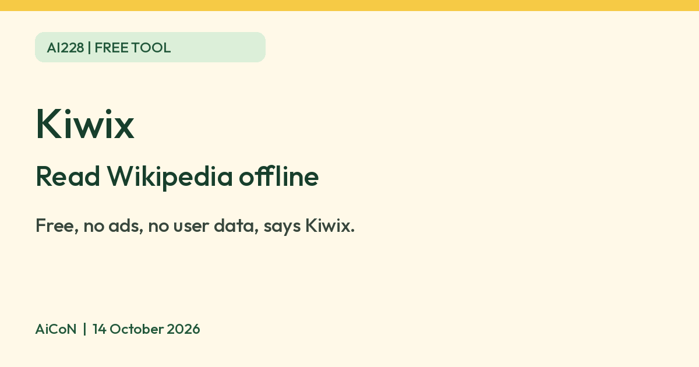

Kiwix: read Wikipedia offline, free and ad-free
Kiwix says its Reader app is free, ad-free and collects no user data, and it lets you read Wikipedia offline. Packs can be big, so start small.

What it is
Kiwix is a free app that lets you read Wikipedia and other reference content with no internet connection. It is run by Kiwix, a non-profit based in Switzerland. You download content packs called ZIM files, then open them in the Kiwix Reader app. Kiwix's own pages say it can also offer Project Gutenberg books. This is not an AI tool. We included it because it is a free resource from an official source.
Is it free?
Yes. Kiwix's FAQ says: "Kiwix is completely free to use, open-source, and does not display ads or collect user data." Its homepage says the Kiwix Reader app and its content are "free to download, free to use and free of advertising". Kiwix says only its Hotspot packages (hardware) and custom services cost money. We did not look at those.
Which devices
- Kiwix's FAQ lists Windows, macOS, Linux, Android, iOS, and a web app (PWA) at pwa.kiwix.org.
- Content packs can be large. Kiwix says each Wikipedia pack comes in three sizes: "mini" (introduction and infobox only, about 95% smaller than the full version), "nopic" (full text, no images, about 75% smaller) and "maxi" (the full default version). We did not check the file sizes in GB.
- AiCoN advice: pick a small pack first, and download on Wi-Fi.
India
- We found no India-specific statement or age limit on the pages we read. Kiwix's homepage quotes a user in India running a school in Ladakh with a Kiwix Hotspot. That is Kiwix's own testimonial, not a check by us.
- We did not check the app store listings or whether Kiwix is available in your app store.
Privacy and data
- Kiwix's privacy policy says the Kiwix software "does not transmit nor record any personal information about its users".
- The Kiwix website uses Matomo analytics and cookies. It says it does not use marketing or advertising cookies, and its webserver logs IP address and device type for a limited time.
- If you request a custom Wikipedia pack, Kiwix uses your Wikimedia login for that tool. You do not need that to use the Reader.
Frequently asked questions
Is Kiwix free?
Yes. Kiwix says the app and its content are free, with no ads and no user data collected.
Do I need internet?
Only to download a content pack. Kiwix says its packs work offline after that.
Is it AI?
No. It is a free offline reader. We included it because it is a free resource from an official source.
How to start
- Open the official Reader page and choose the download for your device. Check current store availability and system requirements.
- Choose a small content pack in the built-in catalog or official Kiwix library. Check its language, date and download size before using mobile data.
- Download the pack while connected, then open its ZIM file in Kiwix. The FAQ says to choose "Open file" and select your downloaded archive.
- Read it offline. Packs are snapshots, so reconnect when you want to check for a newer pack. AiCoN did not test installation or offline reading.
What changed since this post?
Reader, FAQ, homepage, About and privacy pages rechecked on 14 October 2026. Free, ad-free and no-user-data statements are Kiwix's claims, not AiCoN test results. The privacy page is dated 1 July 2026 and describes separate website analytics and server logs. India and app-store availability remain unverified, and pack sizes in GB were not checked. Logo source and CC BY-SA 4.0 attribution were added.
Sources: Kiwix Reader, Kiwix home, Kiwix about, Kiwix privacy policy, Kiwix official Hub, Official branding files, Licensed logo record. Checked 14 October 2026.